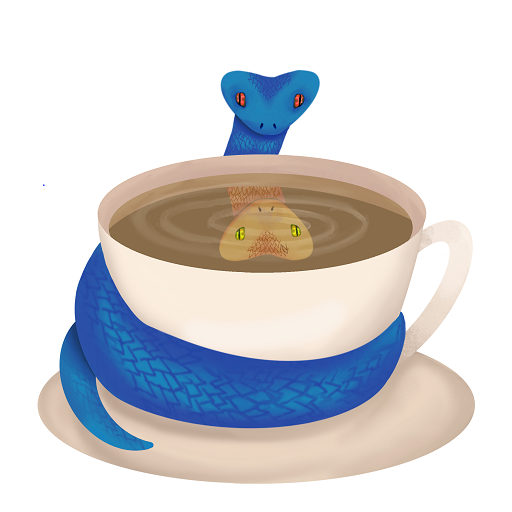

Technical Skills
Languages and technologies I have used.
Python
My strongest language, I have used it countless times throughout many projects.
Java
Another familiar language, it taught me the basics and gave me an understanding of object orientated programming.
SQL
I have done many courses and projects which required use of databases and manipulating the data within.
 TensorFlow
I used TensorFlow to build machine learning models when trying to predict peak pressure of a bleve.
TensorFlow
I used TensorFlow to build machine learning models when trying to predict peak pressure of a bleve.
 Qt
My team and I used Qt to build gui components that worked cross platform when developing our Wsyp project
Qt
My team and I used Qt to build gui components that worked cross platform when developing our Wsyp project
 C++
I have some experience coding in C++ for various university projects.
C++
I have some experience coding in C++ for various university projects.
 C
One more familiar language used throughout university and taught me core programming concepts like memory management and pointers.
C
One more familiar language used throughout university and taught me core programming concepts like memory management and pointers.
 OpenCV
I have experience with OpenCV in image preprocessing to be used in computer vision projects.
OpenCV
I have experience with OpenCV in image preprocessing to be used in computer vision projects.
Linux
Nearly all my university assignments were partially completed using Linux, from developemnt, to just reports.
Windows
When not using linux, the rest of my university was completed on windows, I have expereince with the full Microsoft suite.

JPype
I have used JPype to allow communicaton between Java and Python files in my team Wsyp project.
 Scikit-learn
Used extensivly in mutiple AI based corses to create and use machine learning algorithms.
Scikit-learn
Used extensivly in mutiple AI based corses to create and use machine learning algorithms.
 PyTorch
Limited experience using pytorch to create and train a machine to make predictions.
PyTorch
Limited experience using pytorch to create and train a machine to make predictions.
 Raspberry Pi
I have completed mulitple projects using Raspberry Pi's and have experince in both the software and hardware of them
Raspberry Pi
I have completed mulitple projects using Raspberry Pi's and have experince in both the software and hardware of them
Excel
I have extensivly used Excel for all manor of tasks throughout univeristy, school and my personal life.
 MATLAB
Have used MATLAB many times thoughout engineering and computing degrees for mathematical visualisation.
MATLAB
Have used MATLAB many times thoughout engineering and computing degrees for mathematical visualisation.
 Bash
Used consistently though the years to work on assignments and other projects.
Bash
Used consistently though the years to work on assignments and other projects.
HTML
Have done several projects including this website using html alonf with css and javascript.